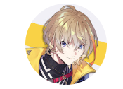
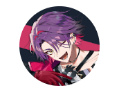

📖 我的入坑故事
在心情失落的時候聽了迷你專輯《Seasons of LOVE？》裡的sanctuary後整個被打到(?)，開始對這些人有興趣開始看精華看直播，回過神我已經在坑底了。
目標是成為No.1唱跳團體！由NIJISANJI VTuber「Fura Kanato」、「Watarai Hibari」、「Shikinagi Akira」、「Seraph Dazzlegarden」四人所組成的團體「VOLTACTION」。 四人每天都秉持著「想透過歌唱、舞蹈和直播，為大家的日常帶來幸福」的信念而活動著。
推薦大家入坑的n個理由
在心情失落的時候聽了迷你專輯《Seasons of LOVE？》裡的sanctuary後整個被打到(?)，開始對這些人有興趣開始看精華看直播，回過神我已經在坑底了。
點一下名字，打開他的官方資料抽屜：

風楽奏斗FURA KANATO黑手黨家族的兒子。本性溫柔，對家業抱有疑問，但作為首領的才能是頂尖等級。現在的職業是青年實業家，經營咖啡廳和餐廳。
生日 3 月 25 日 ・ 身高 177 cm

渡会雲雀WATARAI HIBARI怪盜家族的繼承人。憧憬著能抓住人心、伸張正義的「快盜」。因為不做為了錢的偷竊，所以靠咖啡廳打工維持生活。
生日 9 月 23 日 ・ 身高 183 cm
出生於代代相傳的諜報員家族，是能力高強的前諜報員。現在離開組織，開了一間小事務所，從驅除蜂窩到排除刺客的委託都接。
生日 12 月 12 日 ・ 身高 174 cm
出生於以暗殺為業的家族，從小就磨練暗殺技術。身分充滿謎團，會分別使用好幾個名字。現在已經不當暗殺者，以自由特務的身分接案。
生日 5 月 12 日 ・ 身高 186 cm
| 曲名 | 推薦理由 | 星星 |
|---|---|---|
| BUZZ LOVE | 渡会雲雀作為center的冬曲，MV經費超高超精美，聽完讓整個冬天都熱起來！ | ★★★★★ |
| Seasons | セラフ・ダズルガーデン作為center的春曲，非常溫柔的一首歌，本人私心很喜歡。 | ★★★★★ |
| マジ!Magic!PEACH! | 聽完腦中都是麻吉麻吉Peach！MV很可愛很好笑，舞蹈影片的比桃子動作也是粉絲必會！ | ★★★★★ |
| Seven Days | 新專的其中一首歌，聽完感覺可以快樂的過完一周，非常悠閒自在的歌曲。 | ★★★★★ |
VOLTACTION LIVE
EVOLVE
ADMIT
ONE
#VOLTACTION_EVOLVE
繼 1st LIVE「Dynamic VOLT」之後的第二場演唱會，詳細資訊請看 にじさんじ官方活動頁。
不知道從哪裡開始？照這張清單挑一個就對了：
可以！很多影片有字幕或者也可以用自動翻譯字幕或外接翻譯工具，就算聽不懂，看他們的反應和舞蹈也很好笑、很好看。
2022 年 7 月 13 日，以にじさんじ的四人團體身分出道，出道曲是〈インレイド〉。
不用！可以只推一個人（單推），也可以四個都推（箱推）。上面的「選你的推し」按鈕就是為你準備的。
你被推坑成功了嗎？留下你的心得吧！（W7 學會 JavaScript 後，這個表單就能真的運作）